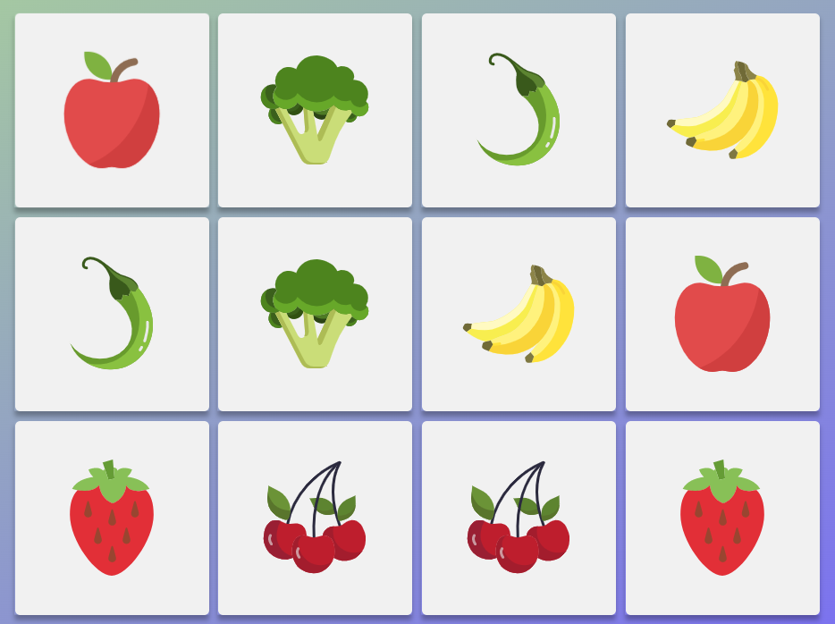

Jeu Memory
Bienvenue sur le site du Memory de l'Eni.
Venez jouer avec nous et faites le meilleur score possible.
Règle du jeu:
- Retournez deux cartes. Si les images sont identiques, le jeu laisse les cartes visibles
- Si les images sont différentes, les cartes se retournent faces cachées là où elles étaient
- La partie est terminée lorsque toutes les cartes ont été assemblées par paires.

Si vous voulez vous souvenir de votre score. Inscrivez vous via le formulaire.
Le jeu garde les 5 meilleurs scores.
Si vous voulez relancer une partie cliquez sur la barre d'espace